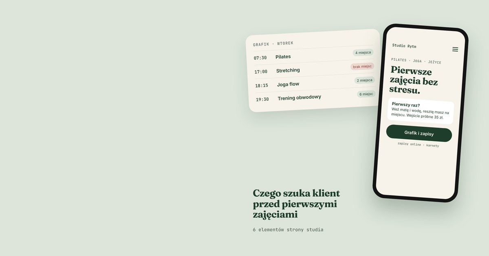

Osoba, która nigdy nie była w Twoim studiu, ma przed pierwszymi zajęciami więcej obaw niż pytań. Czy dam radę? Co mam ze sobą wziąć? Czy nie będę jedyną osobą, która nic nie umie? Stali klienci znają odpowiedzi, więc piszą do Ciebie rzadko. Nowa osoba zwykle nie pisze wcale. Jeśli nie znajdzie odpowiedzi na stronie, po prostu nie przychodzi.
Ten tekst dotyczy małych studiów: pilatesu, jogi, pole dance, stretchingu, treningu personalnego w kameralnej sali. Wszędzie tam, gdzie nowy klient to ktoś, kto pierwszy raz przekracza próg.
Masz Fitssey albo Booksy. Czy strona jest jeszcze potrzebna?
System zapisów rozwiązuje grafik, karnety i płatności. To dużo. Ale profil w systemie rezerwacji to tylko lista zajęć w cudzym szablonie. Nie opowie, czym Twoje studio różni się od tego po drugiej stronie ulicy, nie pokaże instruktorek, nie uspokoi kogoś, kto boi się pierwszych zajęć.
Najlepiej działa połączenie jednego i drugiego: strona przyprowadza ludzi z Google i przekonuje ich do pierwszej wizyty, a przycisk „Zapisz się” prowadzi prosto do grafiku w systemie, z którego już korzystasz. Nic nie zmieniasz w sposobie pracy. O samej różnicy między stroną a aplikacją do rezerwacji pisałem szerzej w tekście Strona czy Booksy.
6 elementów, które powinna mieć strona studia
1. Jasne zdanie: co tu się ćwiczy i dla kogo
Pierwszy ekran ma odpowiedzieć na dwa pytania: jakie zajęcia prowadzisz i czy są dla początkujących. „Pilates i joga na Jeżycach, także dla osób, które zaczynają od zera” mówi więcej niż „Miejsce z pasją i dobrą energią”. Nazwa dzielnicy pomaga też w Google, bo ludzie szukają zajęć blisko domu albo pracy.
2. Grafik, który działa na telefonie
Grafik to najczęściej odwiedzane miejsce na stronie studia. Musi otwierać się jednym kliknięciem i być czytelny na telefonie. Sprawdź to sama: wejdź na swoją stronę z telefonu i spróbuj zapisać się na zajęcia we wtorek wieczorem. Jeśli po drodze trafiasz na przycisk, który nigdzie nie prowadzi, albo tabelę, którą trzeba przybliżać palcami, część osób odpadnie właśnie w tym miejscu.
3. Sekcja „Pierwszy raz?”
To element, którego brakuje na większości stron studiów, a który najmocniej obniża barierę wejścia. Kilka krótkich punktów: na jakie zajęcia zapisać się na początek, co wziąć ze sobą, o której przyjść, czy można przyjść bez karnetu. Przy pole dance czy jodze warto dodać jedno zdanie o tym, że grupy są podzielone według poziomu i nikt nie zaczyna od akrobacji.
4. Cennik bez szukania
Karnety, wejście jednorazowe, wejście próbne, honorowane karty sportowe. Wszystko jako zwykły tekst na stronie, nie w PDF i nie w wyróżnionych relacjach na Instagramie. Osoba, która zna cenę, przychodzi już zdecydowana. Jeśli przyjmujesz Multisport albo Medicover Sport, napisz to wyraźnie, bo dla wielu osób to pierwszy filtr przy wyborze studia.
5. Instruktorzy i opinie
Ludzie wybierają studio w dużej mierze przez osoby, które prowadzą zajęcia. Zdjęcie, imię, krótko o doświadczeniu i stylu prowadzenia wystarczą. Do tego opinie z wizytówki Google, najlepiej te konkretne: o atmosferze, o tym, że instruktorka poprawia technikę, że można zacząć od zera. Opinie z Google są wiarygodne, bo każdy może je sprawdzić.
6. Jak dojechać
Adres, mapa, informacja o parkingu albo przystanku, piętro i wejście, jeśli studio nie jest widoczne z ulicy. Brzmi banalnie, ale spóźnienie na pierwsze zajęcia, bo nie można znaleźć wejścia, to najgorszy możliwy start. Połącz stronę z wizytówką Google, żeby ktoś z okolicy trafił do Ciebie jednym kliknięciem. Jak ją dobrze ustawić, opisałem w tekście o wizytówce Google.
Czego unikać na stronie studia
- Przycisku „Sprawdź grafik”, który nigdzie nie prowadzi. Zdarza się częściej, niż myślisz, zwłaszcza po zmianie systemu zapisów.
- Grafiku jako zdjęcia. Nie da się go przeczytać na telefonie, a Google nie widzi, jakie zajęcia prowadzisz.
- Ogólników zamiast konkretów. „Zajęcia dla każdego” nic nie mówi. „Grupa start: dla osób, które nigdy nie ćwiczyły na rurce” mówi wszystko.
- Nieaktualnych informacji. Stare ceny albo zajęcia, których już nie ma, podważają zaufanie do całej strony.
Ile kosztuje strona dla studia
Prosta strona z ofertą, sekcją dla początkujących, cennikiem, opiniami i przyciskiem do zapisów to koszt od 990 zł netto. Rozbudowana wersja z podstronami dla poszczególnych zajęć i instruktorów oraz lokalnym SEO zaczyna się od 1890 zł netto. Szczegóły znajdziesz w cenniku, a przykładowe kierunki wyglądu na stronie Wybierz styl swojej strony. Jeśli prowadzisz studio treningu personalnego, zobacz też, co obejmuje strona dla trenera personalnego.
Najczęstsze pytania
Czy strona zastąpi system zapisów, z którego korzystam?
Nie musi. Strona może prowadzić do Twojego obecnego systemu, na przykład Fitssey albo Booksy, przez przycisk „Zapisz się” lub osadzony grafik. Klienci zapisują się tam, gdzie do tej pory, a strona przyprowadza nowych.
Czy na stronie studia muszą być ceny?
Nie ma takiego obowiązku, ale ceny widoczne od razu zwiększają liczbę zapisów. Szczególnie ważne są wejście jednorazowe i informacja o kartach sportowych, bo od nich zaczyna większość nowych osób.
Ile trwa zrobienie strony dla studia?
Prosta strona jest gotowa w około 7 dni od otrzymania materiałów. Rozbudowana wersja zajmuje około 14 dni.
Podsumowanie
Strona studia ma przede wszystkim zmniejszyć stres przed pierwszą wizytą: pokazać, co się tu ćwiczy, dla kogo są zajęcia, ile to kosztuje i jak się zapisać. Jeśli chcesz zobaczyć, jak mogłaby wyglądać strona Twojego studia, umów bezpłatną konsultację. Przygotuję propozycję pod Twoje zajęcia.